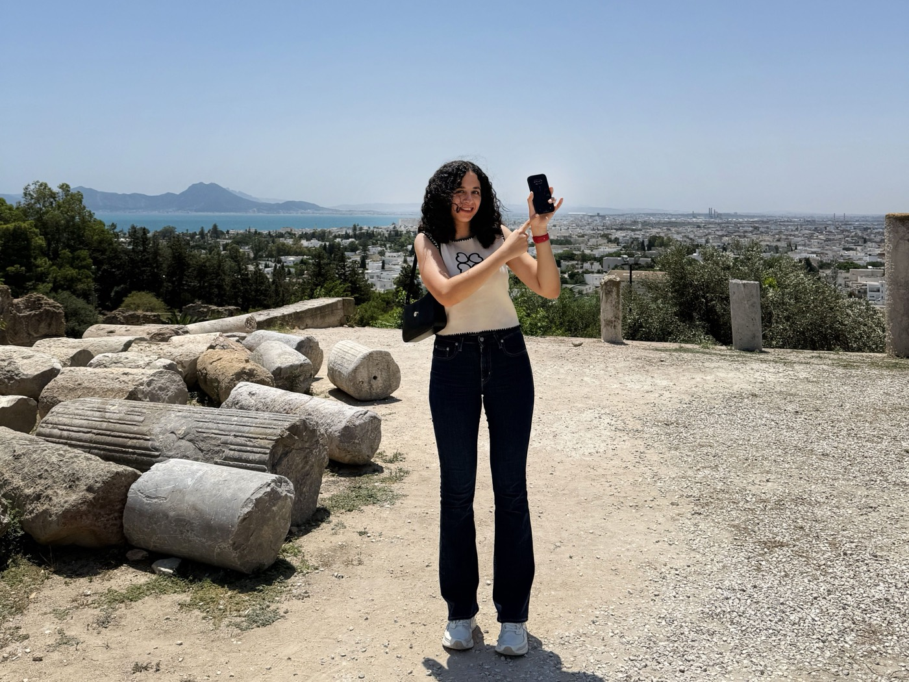
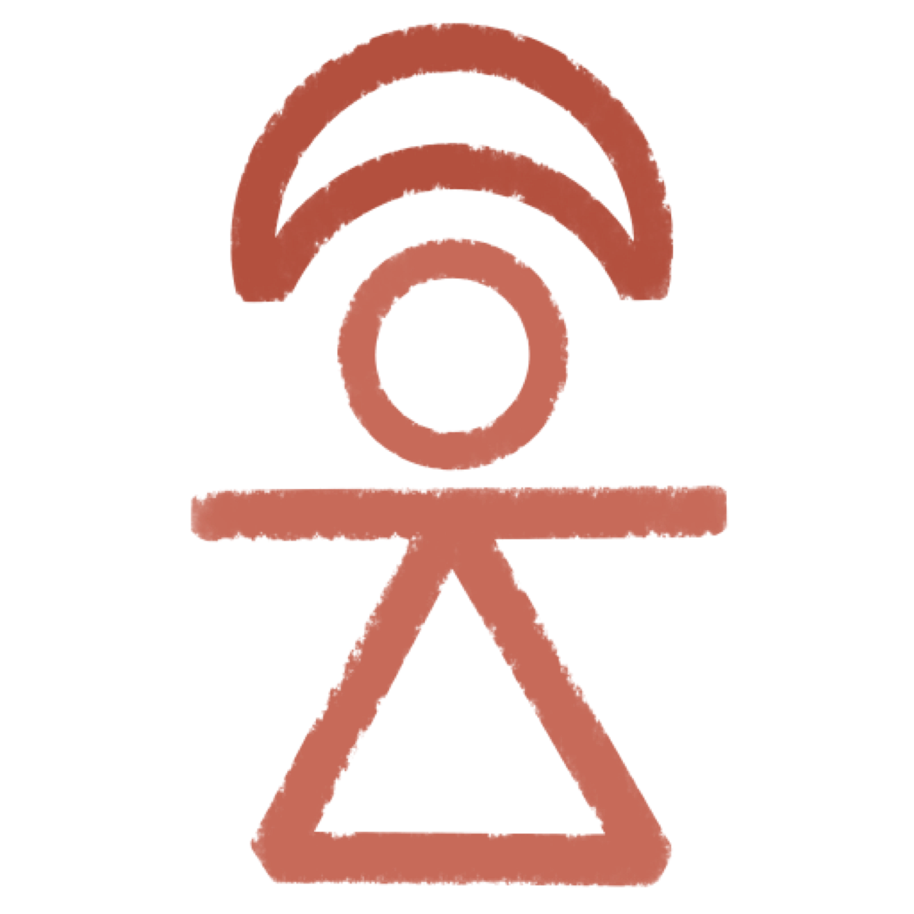

By Ines Said · Published 2025-09-14
This is Tanit XR’s very first news article — and it feels right to begin with a story.

I grew up in Tunisia surrounded by history. Walking past the ruins of Carthage felt ordinary, almost casual. Ancient mosaics and columns were part of my everyday life, as common as the streets or the sea.
But as the years passed, I began to notice what was happening to them. The mosaics cracked under the sun. Names were carved into 2000-year-old stones. Plastic chairs were stacked in courtyards that once belonged to emperors.
Unlike in Rome, where millions visit the Colosseum and billions are spent on its protection, here there was mostly silence. El Jem — the largest colosseum outside Rome — stood almost empty, its stones slowly falling apart.
I started to wonder: what happens when these places are gone? What if the world never really sees them, never understands them, never remembers them?
Tanit XR started with me, my phone, and ruins I couldn’t bear to see vanish. I walked through Carthage with Scaniverse, testing photogrammetry apps, scanning mosaics and columns, uploading them online.
I didn’t know then that these small experiments would spark something bigger. People began reaching out — Tunisians at home, diaspora abroad, researchers and teachers — saying that seeing the models online made them feel pride, curiosity, and connection again.
The project is named after Tanit, the Carthaginian goddess of preservation and protection. For me, she symbolizes guardianship.
Tanit XR is not only about capturing ruins in digital form. It is about guarding memory. Each model says: this mattered, this still matters, and it will not be forgotten.

Yes, we use tools — Scaniverse for scanning, Sketchfab for publishing, Unity and 8thWall for XR development. We experiment with Gaussian splats, LiDAR, and open-source workflows. But this isn’t a tech project at its core.
It is a project about belonging. About walking with my mother and sister under the Tunisian sun, scanning mosaics together, knowing we were saving something fragile. About diaspora volunteers classifying models from abroad, adding their piece of care to the archive. About creating workshops so children in Tunisia don’t see ruins as “just old rocks,” but as treasures that reveal who we are.
This site is home to the Tanit XR archive – a growing collection of 3D models of Tunisia’s cultural heritage. From Carthage to Kairouan, from the Baths of Antoninus to the Zawiya of Sidi Sahib, each scan is a fragment of our shared story.
This News page will be our journal. We’ll share updates from the field, reflections on the process, collaborations with archaeologists and teachers, and milestones as the project grows. Some posts will be celebrations. Some will be vulnerable. All will be honest.
In the next year, we aim to:
But beyond goals and numbers, my hope is simple: that Tanit XR inspires pride, awareness, and care. That it helps Tunisians see their ruins not as forgotten stones, but as treasures. That it reminds the world that Tunisia is not a footnote in history — it is a chapter.
This is only the first step.
Tanit XR is not mine alone. It belongs to everyone who believes that heritage should not vanish quietly. It belongs to the students who will one day explore their history in VR classrooms. It belongs to the diaspora who finally feel seen. It belongs to every visitor who pauses, looks at a 3D model, and feels wonder.
If you are reading this, you are part of this beginning. Thank you for being here.
Together, we can ensure that Tunisia’s story — our story — does not fade. Instead, it can thrive in the digital age, alive for generations to come.